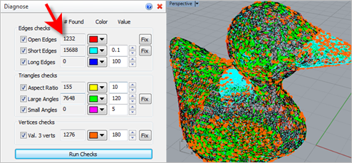
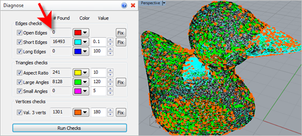

Use this command to diagnose a mesh and optionally fix degenerate triangles if needed. This should be done prior to sending your model to the 3D printer. The Browser offers a wide array of items to check for and allows you the option to Fix each one. The graphics window provides visual color-coded feedback on each check item.
 This command may change the shape of your facet model!: Understand that fixing one condition my introduce more or less of another condition. ALL conditions are reported in the # Found column when ANY of the Fix buttons are selected. This command may change the shape of your facet model!: Understand that fixing one condition my introduce more or less of another condition. ALL conditions are reported in the # Found column when ANY of the Fix buttons are selected.
Achieving your Desired Results: Adjusting parameters values in the Value column will assist you in correcting any conditions that are found. Experimentation with the values to achieve your desired results is advised.
|
|
Screen Pick
|
Optional Information
|
Step 1
|
Select the mesh(es) you want to check and then press Enter. You can select from the graphics window or from the Browser.
|
You can select a mesh first and then select the command icon.
|
Step 2
|
Select from the command dialog and then pick the Run Checks button to display the results.
|
The graphics window will display the conditions found according to the colors selected in the dialog.
|
Step 3
|
To correct conditions found, select one or more of the Fix buttons located in the dialog.
|
The results are displayed in the graphics window.
You can modify the command options, Fix and Run Checks anytime while the command dialog is displayed.
|
|
Tips for Repairing your Mesh: RhinoCAM-MESH provides tools to allow you to fix and repair many irregularities in your mesh models, saving you valuable time and money! Stitch & Close can fix "cracks" along mating facets and close open meshes. Auto Fix can do the same and more including fixing any incorrectly oriented facets. Reduce, Re-mesh and Smooth can fix a variety of irregularities. Diagnose can check and fix edges, triangles and vertices. Check can verify that your mesh model is positioned correctly for your selected 3D printer.
|
|
The following options and reference information are available:
 Diagnose reports over 1,200 gaps and open edges in this mesh!
 Pick the "Fix" button to close all open edges
|
•Open Edges / Fix
Check this box to check for any open edges across adjacent triangles. The results are listed in the # Found column and shown on the graphics window using the specified color. Pick the Fix button to attempt to fix the condition if desired. •Short Edges / Fix
Check this box to check for any short edges below the value specified. The results are listed in the # Found column and shown on the graphics window using the specified color. Pick the Fix button to attempt to fix the condition if desired. •Long Edges
Check this box to check for any long edges above the value specified. The results are listed in the # Found column and shown on the graphics window using the specified color. Pick the Fix button to attempt to fix the condition if desired. |
•Aspect Ratio / Large Angles / Small Angles / Fix
These checks are performed on each facet triangle based on the values supplied. Check the box for each condition you want to check for. The results are listed in the # Found column and shown on the graphics window using the specified color. Pick the Fix button to attempt to fix the condition if desired. |
•Val. 3 Verts
Check this box to check the 3 vertices of each facet triangle based on the value supplied. The results are listed in the # Found column and shown on the graphics window using the specified color. Pick the Fix button to attempt to fix the condition if desired. |
•Run Checks
Select this button to analyze the selected mesh and display the results both visually in the graphics window based on the selected colors and numerically in the # Found column of the command dialog. |